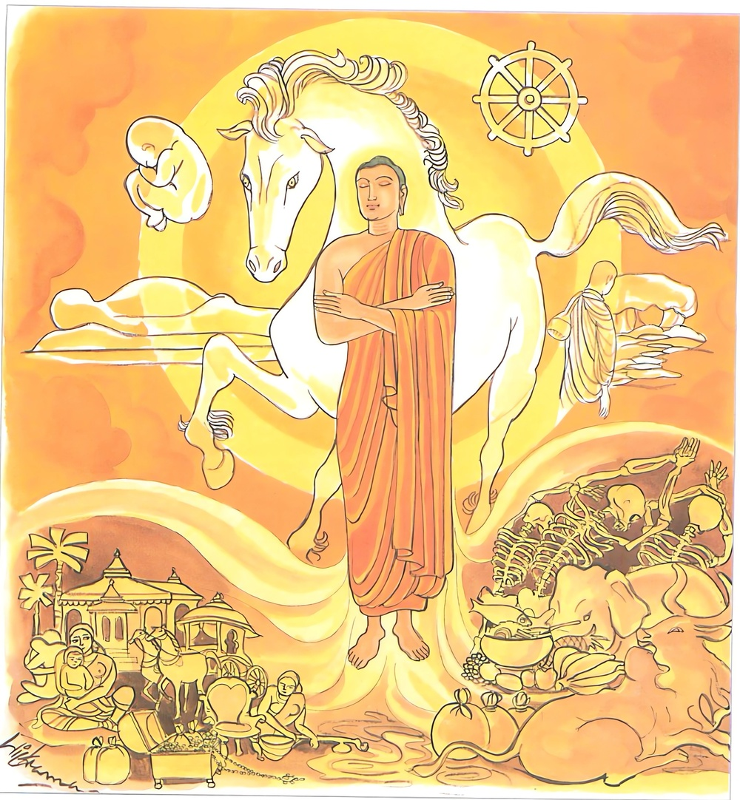

26-39 ඇතුනට බිය නො වූ අඞ්ගුලිමාල ස්ථවිරයන් වහන්සේ
මෙම කතාව ධම්මපද අටුවාවෙන් ද කියවන්න.
උසභං පවරං වීරං මහෙසිං විජිතාවිනං
අනෙජං න්හාතකං බුද්ධං තමහං බ්රූමි බ්රාහ්මණං.
(භය සන්ත්රාස රහිත බැවින්) වෘෂභාජානීයයකු බඳු වූ (උත්තමාර්ත්ථයෙන්) ප්රවර වූ (වීර්ය්යසම්පන්න බැවින්) වීර වූ (මහත් වූ ශීලාදි ධර්මස්කන්ධයන් ඒෂණය කළ බැවින්) මහර්ෂී වූ (ස්කන්ධක්ලේශමෘත්යු) මාරයන් දිනූ තෘෂ්ණාවන්ගෙන් වියුක්ත වූ (මාර්ගඥාන සලිලයෙන්) කෙලෙස්මල සෝදා දැමූ, සිවු සස් පසක් කළ ඒ අශෛක්ෂයා බ්රාහ්මණ යැ යී මම් කියමි.

අඞ්ගුලිමාල මහතෙරුන් පිළිබඳ කතා පුවත “න වෙ කදරියා දෙවලොකං වජන්ති” යන ගාථාවර්ණනායෙහිලා කියන ලද්දේ ය. එහි “කිම, ඇවැත්නි! ඔබ වහන්සේගේ හිස මතුයෙහි කුඩය දරා සිටි නපුරු ඇතු දැක ඔබ වහන්සේට බියෙක් තැති ගැණීමෙක් ඇති නො වූයේ දැ?”යි භික්ෂූන් නැගූ ප්රශ්නයෙහි දී උන් වහන්සේ ”ඇවැත්නි! මම බිය නො වීමි, මට බියෙක් නො උපනැ”යි කීහ. එ කල්හි භික්ෂූන් වහන්සේලා බුදුරජුන් වෙත එළැඹැ “ස්වාමීනි! අඞ්ගුලිමාල ස්ථවිරයන් වහන්සේ තමන් රහත් යි කියා ගන්නාහ”යි දන්වා සිටියහ. එවිට බුදුරජානන් වහන්සේ “මහණෙනි! මාගේ පුත් අඞ්ගුලිමිල ඇතකුට බිය වන්නෙක් නො වේ, ක්ෂීණාස්රව මහාශ්රේෂ්ඨයන් අතුරෙහි ජ්යෙෂ්ඨ වෘෂභ වූ මාගේ පුතුන් වැනි භික්ෂූහු බියට පත් නො වෙති”යි වදාරා මේ ධර්මදේශනාව කළ සේක.
උසභං පවරං වීරං මහෙසිං විජිතාවිනං,
අනෙජං නහාතකං බුද්ධං තමහං බ්රෑමි බ්රාහ්මණන්ති.
වෘෂභාජානෙයයකු බඳු වූ උතුම් වූ වීර්ය්යවත් වූ මහර්සී වූ දිනූ සතුරන් ඇති තෘෂ්ණා රහිත වූ සෝදා හළ කෙලෙස් මල ඇති සිවු සස්දහම් අවබෝධ කළ ඔහු, මම බමුණු යි කියමි.
උසභං පවරං වීරං මහෙසිං විජිතාවිනං = වෘෂභාජානෙයයකු බඳු වූ උතුම් වූ වීර්ය්යවත් වූ මහර්ෂී වූ කෙලෙස් සතුරන් දිනූ, දිනූ කෙලෙස් සතුරන් ඇති.
‘උසභ’ නම්, භයසන්ත්රාස නැති බැවින් අභිමඞ්ගල සම්මත වූ ශ්රේෂ්ඨ වෘෂභ තෙමේ ය. “අච්ඡම්හිතත්තෙන අභිමඞ්ගලසම්මතෙන උසභ සදිසතාය උසභං” යනු අටුවා. නිර්භය කාරණයෙන් වෘෂභ රාජන් වූයේ උසභ. ගොපිතෘ වූ ගොපරිණායක වූ සමූහ නායක වූ වෘෂභ තෙමේ ය. ගෙරින් සියයකට දෙටු වූයේ උසභ ය, දහසකට දෙටු වූයේ වසභ ය, සියක් දහසකට දෙටු වූයේ නිසභ ය, යි ඇතමුන්ගේ පිළිගැණීම ය. තවත් කෙනෙක් එක් ගම් කෙතකට දෙටු වූයේ උසභ ය, ගම් කෙත් දෙකක්ට දෙටු වූයේ වසභ ය, සියලු තැන නො සැලී සිටියේ නිසභ ය, යි කියත්. එහෙත් උසභ - වසභ - නිසභ යන නම්, සම කළ හැකියකු නැති බැවින් එකක් කෙරෙහි ම යෙදී සිටියේ ය යි ගැණීම වඩා සුදුසු ය.
‘පවර’ නම්, සියලු ලෝ වැස්සන් විසින් අභිප්රාර්ත්ථනීය වූයේ ය. ඒ මෙසේ කීහ:- “සබ්බලොකෙන අභිපත්ථනීයත්තා පවරො” යනු විසින්.
‘වීර’ නම්, මෙහි සියලු ස්කන්ධලෝකය අභිභවනය කිරීමෙහි සමත් වූ වීර්ය්යය ඇතියේ ය.
‘මෙහෙසි’ නම්, ශීලස්කන්ධාදී වූ ගුණයන් සොයනුයේ ය. “මහන්තෙ සීලක්ඛන්ධාදිකෙ ගුණෙ ගවෙසතීති = මහෙසී” යනු නිරුක්ති. කෙලෙස් සතුරන් දිනූ, දිනූ කෙලෙස් සතුරන් ඇතියේ ‘විජිතාවී’ ය. පුරුෂාජානෙයයකු විසින් දිනිය යුතු වූ සියලු කෙලෙස් දිනා සිටියේ විජිතාවී නම් වේ ය යි අටුවාව කියයි. “පුරාසාජානියෙන විජෙතබ්බස්ස සබ්බස්සාපි සඞ්කිලෙසපක්ඛස්ස විජිතත්තා විධමිතත්තා = විජිතාවි” යනු විසින්. සසුන්හි මනාව පිළිපැදීමෙන් දිනිය යුතු කෙලෙස් ඇති තාක් දිනා සිටියේ විජිතාවී ය. මෙහිලා මෙය දත යුතු ය:- “සාසනෙ සම්මා පටිපජ්ජන්තෙන විජෙතබ්බං කිලෙසගණං විජිත්වා ඨිතො විජිතාවී නාම” යනු. මෙතෙමේ උපධිවිවේකයෙන් යුක්ත වූයේ ය.
අනෙජං නහාතකං බුද්ධං = තෘෂ්ණා රහිත වූ සෝදා හළ කෙලෙස් මල ඇති සිවු සස් දහම් අවබෝධ කළ.
‘එජා’ නම්, තෘෂ්ණා ය. අරමුණුවල ලා සත්ත්වයන් කම්පනය කරණ බැවින් එජා නම් වූ තෘෂ්ණාව මුළුමනින් නසා සිටියේ ‘අනෙජ’ නම්. [1]
‘නහාතක’ නම්, සෝදා හළ කෙලෙස්මල ඇතියේ ය. “නහාත කිලෙසත්තා = නහාතකො, ධොතකිලෙසත්තාති අත්ථො” යනු අටුවා. සිවු සස්දහම් මුළුමනින් සිවුමග නුවණින් දැන සිටියේ ‘බුද්ධ’ නම්.
තං අහං බ්රෑමි බ්රාහ්මණං = ඔහු මම බමුණු යි කියමි.
යමෙක් සන්ත්රාස නැති බැවින් වෘෂභාජානෙයයකු බඳු වූයේ ද, සියලු ලෝ වැස්සන් විසින් පැතිය යුතු බැවින් උතුම් වූයේ ද, සම්යක්ප්රධානවීර්ය්යයෙන් වීර්ය්යවත් වූයේ ද, ශීලාදිධර්මස්කන්ධ පංචකය සොයා ගත් බැවින් මහර්ෂී වූයේ ද, සියලු කෙලෙස් සතුරන් දිනූයේ ද, තෘෂ්ණා රහිත වූයේ ද කෙලෙස්මල සෝදා හළේ ද සිවු සස්දහම් අවබෝධ කෙළේ ද ඔහු බ්රාහ්මණ නම් වන්නේ ය.
ධර්මදේශනාවගේ අවසානයෙහි බොහෝ දෙන සෝවන් ඵලාදියට පැමිණියාහු ය.
අඞ්ගුලිමාල ස්ථවිරවස්තුව නිමි.
-
14-6 ‘දුක්ඛසමුප්පාදං’ යනු බලනු. ↑